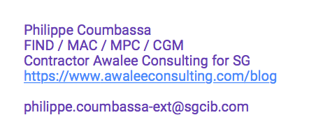
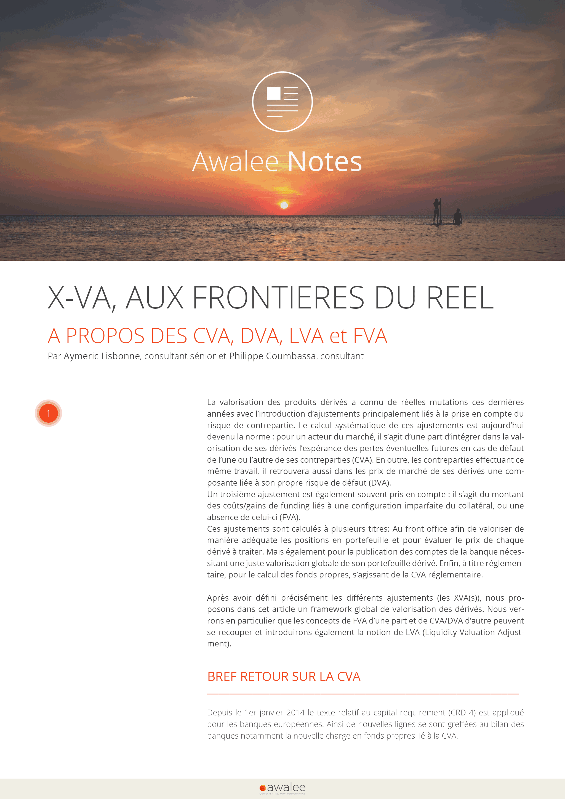
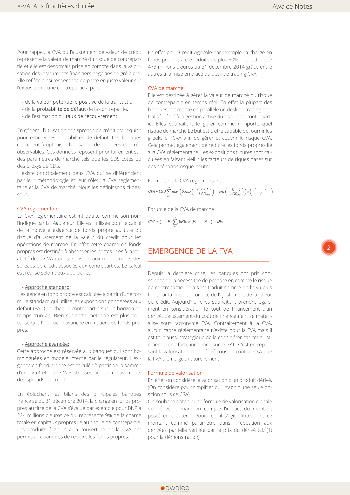
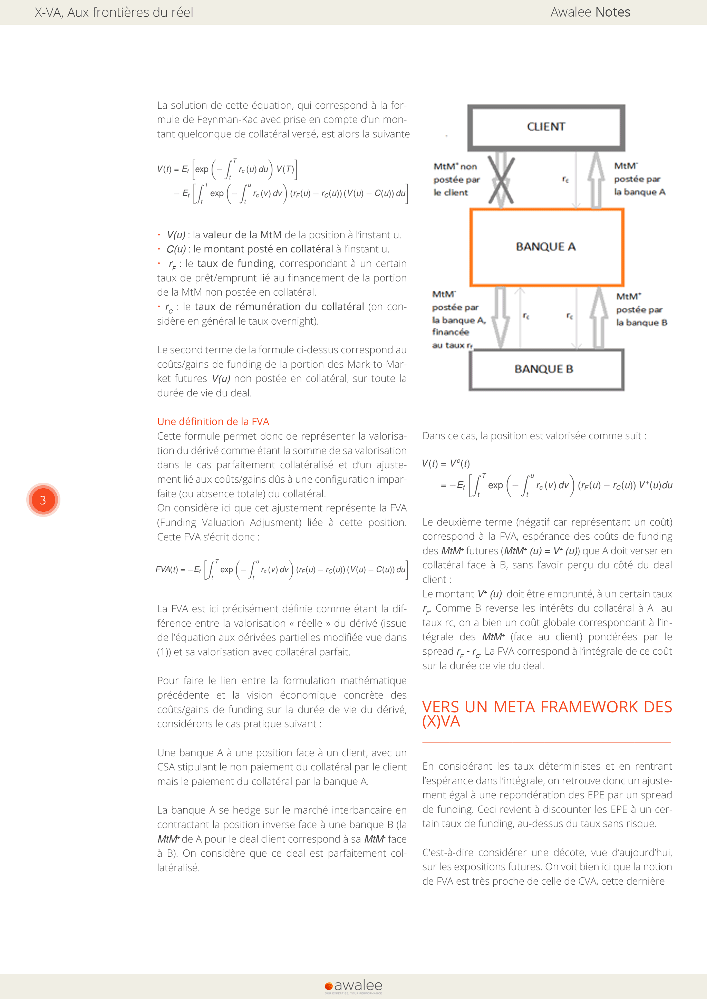
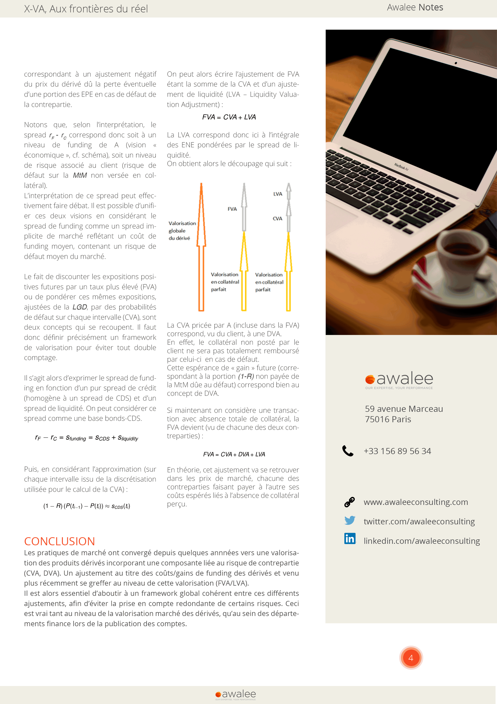

<!doctype html>
<html lang="en">

	<head>
		<meta charset="utf-8">

		<title>reveal.js - The HTML Presentation Framework</title>

		<link href='http://fonts.googleapis.com/css?family=Open+Sans:300italic,400italic,400,300' rel='stylesheet' type='text/css'>

		<meta name="description" content="A framework for easily creating beautiful presentations using HTML">
		<meta name="author" content="Hakim El Hatgtab">

		<meta name="apple-mobile-web-app-capable" content="yes" />
		<meta name="apple-mobile-web-app-status-bar-style" content="black-translucent" />

		<meta name="viewport" content="width=device-width, initial-scale=1.0, maximum-scale=1.0, user-scalable=no, minimal-ui">

		<!-- Latest compiled and minified CSS -->
		<link rel="stylesheet" href="https://maxcdn.bootstrapcdn.com/bootstrap/3.3.4/css/bootstrap.min.css">

		<!-- Optional theme -->
		<link rel="stylesheet" href="https://maxcdn.bootstrapcdn.com/bootstrap/3.3.4/css/bootstrap-theme.min.css">

		<!-- Latest compiled and minified JavaScript -->
		<script src="https://maxcdn.bootstrapcdn.com/bootstrap/3.3.4/js/bootstrap.min.js"></script>


		<link rel="stylesheet" href="css/reveal.css">
		<link rel="stylesheet" href="css/theme/white.css" id="theme">

		<!-- Code syntax highlighting -->
		<link rel="stylesheet" href="lib/css/zenburn.css">

		<link rel="stylesheet" href="css/style.css">
		<!-- Printing and PDF exports -->
		<script>
			var link = document.createElement( 'link' );
			link.rel = 'stylesheet';
			link.type = 'text/css';
			link.href = window.location.search.match( /print-pdf/gi ) ? 'css/print/pdf.css' : 'css/print/paper.css';
			document.getElementsByTagName( 'head' )[0].appendChild( link );
		</script>

		<!--[if lt IE 9]>
		<script src="lib/js/html5shiv.js"></script>
		<![endif]-->

    <script type="text/javascript" src="https://www.google.com/jsapi"></script>
    <script type="text/javascript">
      google.load("visualization", "1", {packages:["corechart"]});
      google.setOnLoadCallback(drawChart);
      function drawChart() {

        var data = google.visualization.arrayToDataTable([
          ['Task', 'Hours per Day'],
          ['Préparation',     8],
          ['Ecriture',      2],
        ]);

        var options = {
          title: ''
        };

        var chart = new google.visualization.PieChart(document.getElementById('piechart'));

        chart.draw(data, options);
      }
    </script>


	</head>

	<body>
		<header>
			<div>
				

			</div>

		</header>
		<div class="reveal">
			<div class="slides">
				<section data-markdown data-separator="^---$" data-separator-vertical="^--$" data-separator-notes="^Note:" da>
					<script type="text/template">

#Cadrage


---
					# Préambule

---

##Motivation

Créer son **propre média** et/ou être actif sur les réseaux sociaux et médias afin:

<div class="container-fluid frame">
	<div class="row">
		<div class="col-md-4">
				
				<p>d'accroître sa notoriété</p>
		</div>
		<div class="col-md-4">
			
			<p>de valoriser son image</p>
		</div>
		<div class="col-md-4">
			
			<p>de promouvoir ses services à valeur ajoutée et éventuellement recruter de nouveaux talents</p>
		</div>
	</div>

</div>

--

A l'ère du digital, il devient aujourd'hui fondamental pour chacun de nous d'**être présent sur les supports numériques** pour: 

<div class="container-fluid frame">
	<div class="row">
		<div class="col-md-6">
				
				<p>Développer notre communauté.</p>
		</div>
		<div class="col-md-6">
			
			<p>Bénéficier d'une meilleur connaissance de notre environnement.</p>
		</div>
	</div>

</div>

---

##Comment procéder ?

En communicant notre point de vue et notre expertise sur les sujets du moment et d'avenir à travers:

- Des **articles rédigés par les consultants** qui partagent leur vision.
- Des **tribunes dans les medias** (Huffington post, Agefi etc.)

--

<i class="fa fa-facebook"></i>

Le tout relayé sur les **réseaux sociaux** qui représentent un outil marketing très efficace à bas coût pour:

- Accroître notre base clients. 
- Embéllir l'image de marque.
- Démontrer le savoir faire d'Awalee.

--

Mettre dans les signatures des consultants en mission le lien du blog.




C'est un bon moyen de faire **diffuser notre expertise** et notre vision chez le client et aussi auprès des collaborateurs.

---


# Rédaction article

---

#Briefing

## Vous vous préparez à rédiger un article?

Ne vous jetez pas tout de suite sur une feuille blanche.

--

## La difficulté c'est de commencer.

Parce que l'on cherche souvent à écrire vite et donc, on ne prend pas le temps de structurer.

--

##Tempd de rédaction

<div id="piechart" style="width: 900px; height: 500px;"></div>

--

## Préparation

- Créer une idée
- Organiser
- Développer

Ces étapes **représente 80% de votre temps**.


--

## Ecrire

Cette étape ne représente que 20% du temps.

---

#Conseils

3 conseils pour bien rédiger.

--

##Conseil #1

- **Choisir la cible** à laquelle vous souhaitez adresser cet article? 

- Qui sera votre lecteur (DSI, Direction des opérations, opérateurs BO, Direction financière, MOA, Quants..) ?

--

## Conseil #2

- **Adopter un point de vue**: Définir sous quel angle vous souhaitez traiter le sujet choisi (métier, SI réglementaire, méthodo, organisationnel, stratégique,...). 

- Ne pas vouloir tout dire, **hiérarchiser l'information** pour plus de clarté dans la lecture.

--

##Conseil #3

**Organiser votre pensée** et donc votre plan !

- Un bon plan au service du message. Une information claire et organisée.

- Une idée par phrase. Une phrase complexe est composée de plusieurs phrases simples.

- Une seule idée est développée dans un paragraphe.

---

##Structure d'un article


L'article doit **accrocher le lecteur**... et ne plus le lâcher à l'habillage de l'article.

--

##Le titre



- Donner envie de lire la suite.
- Informer en quelques mots porteurs de sens.
- Etre clair et précis.

--

##Un chapeau


- Informatif: résumé de l'information à venir ou aperçu de l'article
- Indicatif: Comme une bande annonce de film, met en appétit le lecteur.

--

##Les inter-titres



- Permet d'articuler les différentes étapes de votre réflexion.

- Posés à intervalles réguliers pour aérer l'ensemble de l'article et offrir une pause aux lecteurs.

--

##Des encarts



- Pour **dynamiser la lecteur** de l'article.

- Mettre en encart les informations sur lesquelles vous souhaitez zoomer : actualité / loi / expérience / apllication / formation / offre commerciale

--

##Des illustrations


schémas / graphiques / tableaux / formules / etc.

--

##Une conclusion



- Soit résumé / synthèse.
- Soit la préconisation d'une solution.
- Soit un point de vue / prise de position.

---

#Sujets de rédaction ?

--

## Propositions

- Deep learning appliqué au trading.
- Revu fondamentale du trading book.
- Mise en pplace du desk xVA.
- Réglementation Bâle IV.
- d'autres idées?

--

##A vos plumes et crayons


					</script>
				</section>
			</div>


		</div>

		<script src="lib/js/head.min.js"></script>
		<script src="js/reveal.js"></script>

		<script>

			// Full list of configuration options available at:
			// https://github.com/hakimel/reveal.js#configuration
			Reveal.initialize({
				controls: true,
				progress: true,
				history: true,
				center: true,

				transition: 'slide', // none/fade/slide/convex/concave/zoom

				// Optional reveal.js plugins
				dependencies: [
					{ src: 'lib/js/classList.js', condition: function() { return !document.body.classList; } },
					{ src: 'plugin/markdown/marked.js', condition: function() { return !!document.querySelector( '[data-markdown]' ); } },
					{ src: 'plugin/markdown/markdown.js', condition: function() { return !!document.querySelector( '[data-markdown]' ); } },
					{ src: 'plugin/highlight/highlight.js', async: true, condition: function() { return !!document.querySelector( 'pre code' ); }, callback: function() { hljs.initHighlightingOnLoad(); } },
					{ src: 'plugin/zoom-js/zoom.js', async: true },
					{ src: 'plugin/notes/notes.js', async: true }
				]
			});

		</script>
		<footer>

		</footer>
	</body>
</html>
